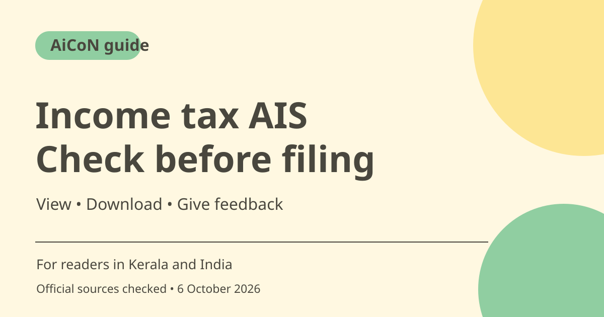

AIS income tax statement: view, download and feedback
The Annual Information Statement (AIS) shows financial information available to India's Income Tax Department. Compare it with your own records before filing a return and give feedback on wrong entries. AIS is not a complete substitute for your records.

What is AIS?
AIS is a taxpayer statement with identity details and sections covering TDS/TCS, reported financial transactions, tax payments and other information. It can show both the reported value and a modified value after taxpayer feedback or source confirmation. It helps you see what has been reported against your PAN.
AIS, Form 26AS and TIS are different
The current official FAQ says that from assessment year 2023-24, Form 26AS on TRACES displays TDS/TCS-related data. Other taxpayer details are available in AIS. The Taxpayer Information Summary (TIS) within AIS groups information by category, such as salary, interest or dividend. It shows processed values and values accepted by the taxpayer or confirmed by the source. These may be used for return prefilling where applicable.
Who should check it?
Registered taxpayers can access AIS through the e-filing portal. A salaried person, freelancer, small-business owner or investor in Kerala can compare it with salary documents, bank interest records, investment statements and other evidence relevant to their return. Review unexpected amounts, duplicates and transactions that do not belong to you.
When to check and what to compare
Review the relevant financial year before filing, rather than assuming the newest screen is the correct period. Keep financial year and assessment year distinct. Check the source, category and amount for important entries. The Department warns that some transactions may not appear at all. You still need to report complete and accurate income.
How feedback works
For active entries under TDS/TCS, SFT or Other Information, the FAQ describes an Optional button in the Feedback column. Choose the reason that matches the facts and enter the required details. After submission, the statement can show feedback and a modified value alongside the reported value. Save the acknowledgement and supporting evidence. Feedback alone does not prove that a return is correct or that a reporting source has accepted every change.
How to use it, step by step
- Open incometax.gov.in yourself and log in to your e-filing account. Do not use a message link promising a refund.
- Choose Annual Information Statement (AIS) on the dashboard. The current FAQ also gives e-File > Income Tax Return > View AIS as an alternative.
- Read the redirect message and choose Proceed to reach the AIS portal. Open the AIS tile and check the relevant financial year.
- Compare identity details and transaction entries with original records. Use TIS to understand totals, not to replace detailed checking.
- Download PDF, JSON or CSV as needed. Keep the file private because it contains financial and identity information.
- For a disputed active entry, open its feedback option, choose the accurate reason, enter details and submit. Save the acknowledgement and inspect Activity History.
- Prepare the return using all your records. Seek qualified tax advice for complex or unresolved entries rather than guessing how they should be taxed.
Cost, eligibility and limits
| Access | Use your registered e-filing account. This is an official statement service, not a paid agent product. |
|---|---|
| Downloads | PDF, JSON and CSV are confirmed in the FAQ. Do not upload unredacted statements to public groups or unknown AI tools. |
| Limits | AIS may omit transactions. Viewing it or giving feedback is not the same as filing a return. |
Frequently asked questions
Does AIS include every transaction?
No. The official FAQ warns that other transactions may not be displayed. Report complete and accurate information from all your records.
Can I correct an entry?
You can submit feedback on eligible active entries. Keep the acknowledgement and check the resulting status.
Does downloading AIS file my ITR?
No. Filing a return is a separate process.
Official sources
Checked 6 October 2026. Features and prices can change. This is a guide, not a personal product test.